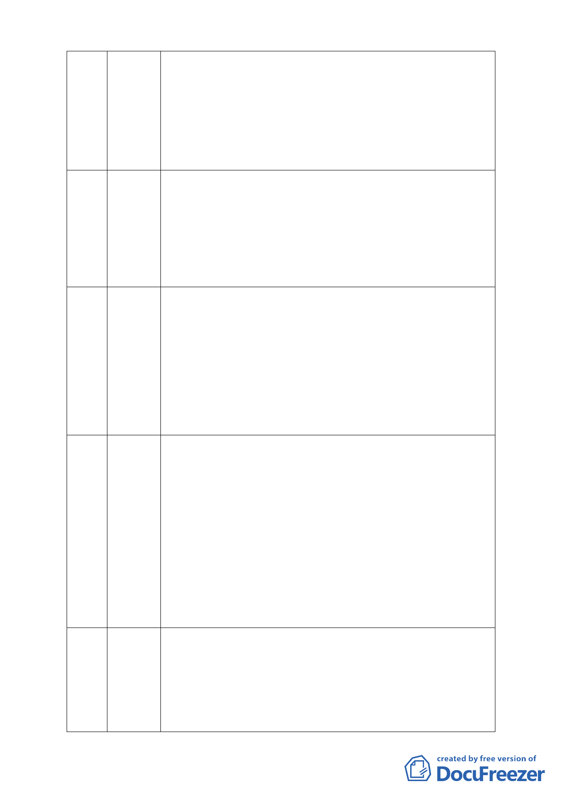

都是支持他的人，這樣的公聽會算數嗎？剛才里長也誠懇拜託慈濟
前來召開公聽會，為何慈濟不敢呢？讓大家知道你真正要做什麼這
不是一項好的作為嗎？請慈濟的師兄師姊想想，慈濟多年來購置保
護區工業區農業區進行變更，這種行為和大財團養地有何差別？又
聽說慈濟拒絕換地堅持開發的行為，其幕後動機又是如何？內湖居
民亦曾建議將此區變為防泛園區，果真如此居民一定雙手贊成。最
後給委員善意建議，如果今天所送資料是錯誤或偽造的話，請退回
此審議案。
本人在此已居住半世紀了，得知此事是 11 月 11 日到這裡來聽才知
70 林鄭彩雲 道，之前有所謂公聽會則全然不知，12 年前為此案遊行公投過，
（張淑媛代） 慈濟不走也不動，不知在打什麼主意。保護區不應該開發，這是ㄧ
般居民都清楚之事，學者專家更不用我們來教，即使它是填土過。
早期 88 水災時知本溫泉兩旁堤岸都被沖毀，慈濟的工程在這裡又
能夠保證什麼。本案實在不能予以開發通過，部分土地他們現在也
已在用了，為何還要變更呢？實在讓人不解。
本人是內湖的媳婦，10 幾年前從歐洲回國時就想找ㄧ個跟歐洲很
71 邱美琪 像的地方，很幸運的我們找到內湖這個地方。但是也很不幸的我們
跟慈濟的命運開始掛鉤在一起，因為我的原屋主就是賣地給慈濟的
地主，該地主ㄧ賣完地就旋即搬離此處，似乎他已經預期有事情要
發生。也有人很樂觀的告知此地是溜地是保護區，台北市政府一定
會堅守保護區政策，且慈濟是公益團體也絕對不會亂開發。但是很
不幸從我小孩還在坐娃娃車開始我就推著他參加活動，也發覺慈濟
的力量好大阿，我相信本案如果通過，洪水還沒淹過來以前，我們
會先得憂鬱症以致死亡，是慈濟和市政府讓我們失望。請不要讓本
案通過。
我有兩點意見陳述：一、環保等於開發嗎？你在那塊土地上用任何
72 蕭年美 大型的器械去開發就是對土地的踐踏、對土地的傷害，在此論述下
環保怎麼會等於開發呢？二、請各位回顧去年的莫拉克風災造成台
灣多大的財損，去年財損約 190 到 230 億，今年又追加了 775 億，
整個莫拉克風災幾乎花了我們快ㄧ兆元了。今年的凡那比颱風農損
也 20 億，等等極端氣候的到來，我們市政府準備好了嗎？如果這
塊保護區沒有好好保存，請問這些財損如何做調合經濟？因此我希
望：一、不要再消費環保了。二、從今年的負債報告顯示，負債
4.6 兆元是政府每支出 100 元就有 11 元是要還債的，是要用 62 年
的時間才能還清喔！如果再加上一些潛藏的負債更高達 19 兆元，
每人平均負債是 80 萬，請問我們還要再債留子孫嗎？因此請讓保
護區發揮其國土保育的功能，任何極端氣候再來的災害我們政府都
無法去付出，更何況要債留子孫，請不要做歷史的罪人。
ㄧ、建議審議委員會“否准 " 本開發申請案。
73 葉清恩 二、敦請慈濟高層永遠撤銷本開發案。
三、理由 :
( 一 )搶救慈濟的初發心 ; 維護慈濟完美聲譽。
1. 我愛慈濟，但更愛老天爺恩賜給台北市蒼生的大自然保護區。
內湖區以曾有慈濟資源回收環保示範園區為榮 , 但內湖區更需要
復建具生態及滯洪機能的美龐清景大湖。
-9-